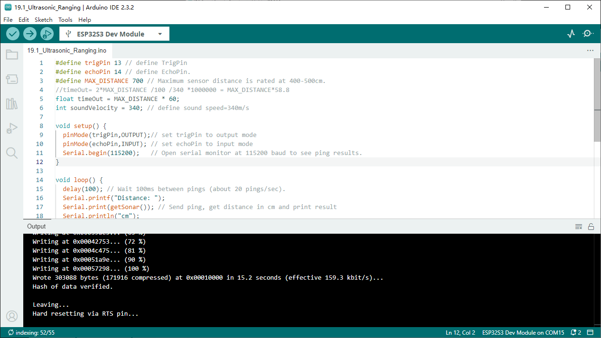
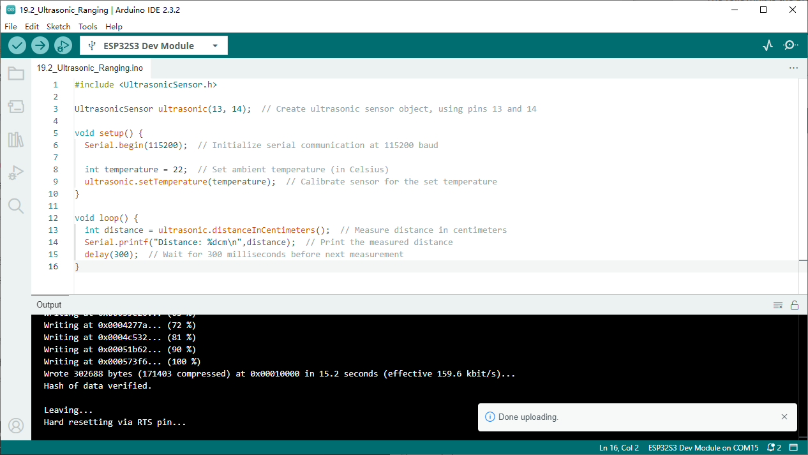

Chapter 19 Ultrasonic Ranging
In this chapter, we learn a module which use ultrasonic to measure distance, HC-SR04.
Project 19.1 Ultrasonic Ranging
In this project, we use ultrasonic ranging module to measure distance, and print out the data in the terminal.
Component List
Raspberry Pi Pico W x1
830 Tie-Points Breadboard x1
Ultrasonic Sensor x1
F-M DuPont Cable x4
Connect
Note that the voltage of ultrasonic module is 5V in the circuit.

Sketch
Sketch_19.1_Ultrasonic_Ranging

Download the code to ESP32-S3 WROOM, open the serial port monitor, set the baud rate to 115200 and you can use it to measure the distance between the ultrasonic module and the object. As shown in the following figure:
Code
The following is the program code:
#define trigPin 13 // define TrigPin
#define echoPin 14 // define EchoPin.
#define MAX_DISTANCE 700 // Maximum sensor distance is rated at 400-500cm.
//timeOut= 2*MAX_DISTANCE /100 /340 *1000000 = MAX_DISTANCE*58.8
float timeOut = MAX_DISTANCE * 60;
int soundVelocity = 340; // define sound speed=340m/s
void setup() {
pinMode(trigPin,OUTPUT);// set trigPin to output mode
pinMode(echoPin,INPUT); // set echoPin to input mode
Serial.begin(115200); // Open serial monitor at 115200 baud to see ping results.
}
void loop() {
delay(100); // Wait 100ms between pings (about 20 pings/sec).
Serial.printf("Distance: ");
Serial.print(getSonar()); // Send ping, get distance in cm and print result
Serial.println("cm");
}
float getSonar() {
unsigned long pingTime;
float distance;
// make trigPin output high level lasting for 10μs to triger HC_SR04
digitalWrite(trigPin, HIGH);
delayMicroseconds(10);
digitalWrite(trigPin, LOW);
// Wait HC-SR04 returning to the high level and measure out this waitting time
pingTime = pulseIn(echoPin, HIGH, timeOut);
// calculate the distance according to the time
distance = (float)pingTime * soundVelocity / 2 / 10000;
return distance; // return the distance value
}
Project 19.2 Ultrasonic Ranging
Component List and Connect
Component List and Connect are the same as the previous section
Sketch
How to install the library
We use the third party library UltrasonicSensor. If you haven’t installed it yet, please do so before learning. The steps to add third-party Libraries are as follow s: open arduino->Sketch->Include library-> Manage libraries. Enter “UltrasonicSensor” in the search bar and select “UltrasonicSensor” for installation. Refer to the following operations:

Sketch_19.2_Ultrasonic_Ranging

Download the code to ESP32-S3 WROOM, open the serial port monitor, set the baud rate to 115200. Use the ultrasonic module to measure distance. As shown in the following figure:
Code
The following is the program code:
#include <UltrasonicSensor.h>
UltrasonicSensor ultrasonic(13, 14); // Create ultrasonic sensor object, using pins 13 and 14
void setup() {
Serial.begin(115200); // Initialize serial communication at 115200 baud
int temperature = 22; // Set ambient temperature (in Celsius)
ultrasonic.setTemperature(temperature); // Calibrate sensor for the set temperature
}
void loop() {
int distance = ultrasonic.distanceInCentimeters(); // Measure distance in centimeters
Serial.printf("Distance: %dcm\n",distance); // Print the measured distance
delay(300); // Wait for 300 milliseconds before next measurement
}